Social media manager et créateur de contenu, je construis à côté des apps, des sites, des jeux et des vidéos. En voici une sélection.
L'app du premier manga café de Suisse, à Genève. On y retrouve l'agenda des tournois et soirées, une boutique avec retrait au comptoir et le SubaPass : une saison de paliers et de récompenses, de l'XP et un Top 10 des membres. Le staff a aussi son interface caisse.
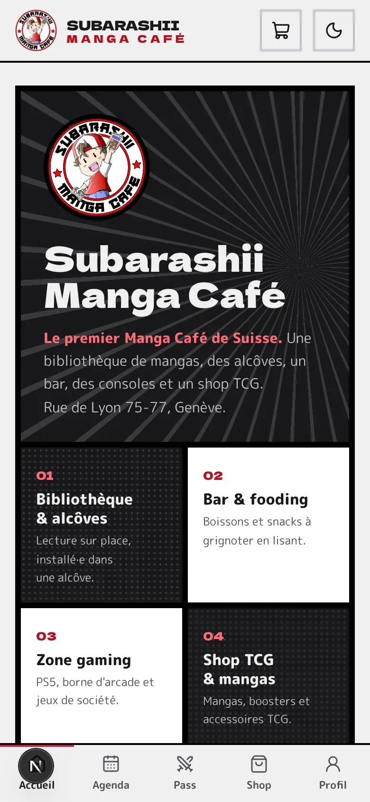
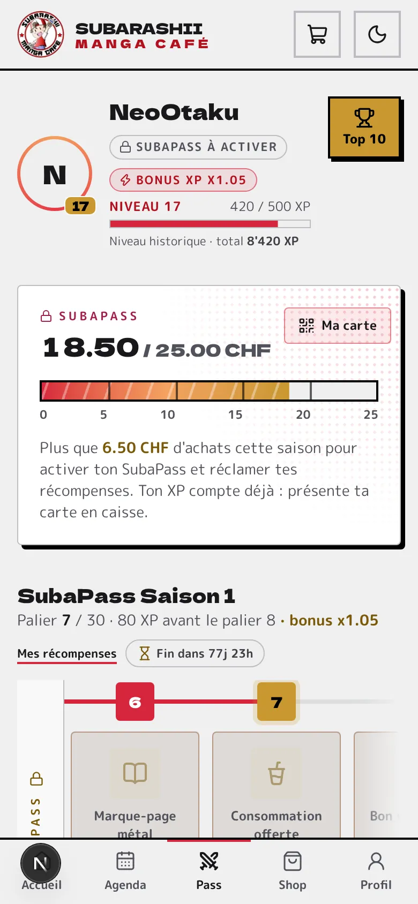
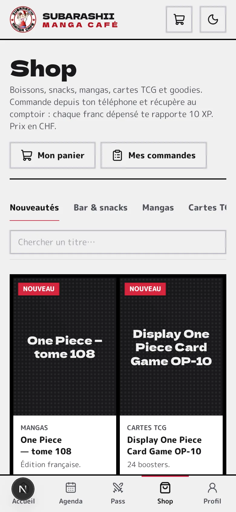
Mon jeu de bluff et de déduction, de 8 à 24 joueurs. Il a déjà été testé par plus de 100 personnes. Le site a l'ambiance d'un écran de surveillance. On y trouve des cartes de rôles qui se retournent, les règles complètes, une simulation pixel art de la première nuit et une liste d'attente pour le lancement.
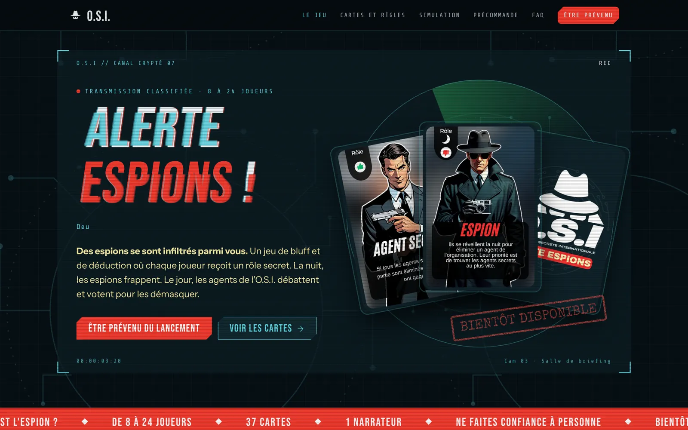
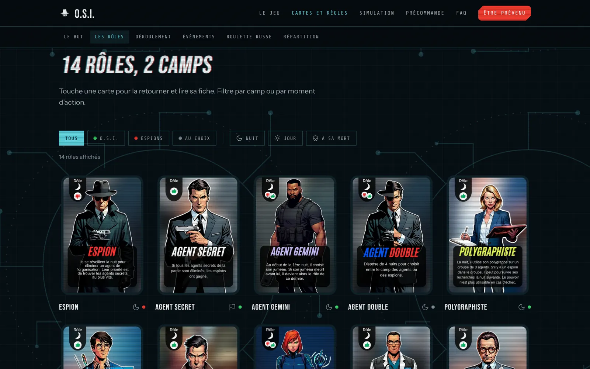
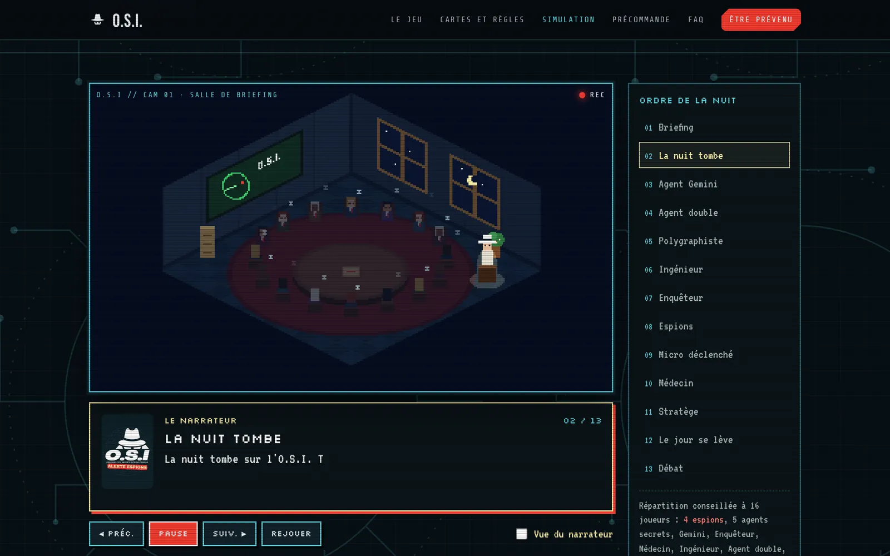
Un film vertical en pixel art pour le TikTok du jeu. Dans le QG de l'O.S.I., 16 agents et 4 espions passent leur première nuit. Le narrateur appelle les rôles un par un, dans l'ordre officiel, jusqu'au lever du jour. La voix off a été faite avec ElevenLabs.
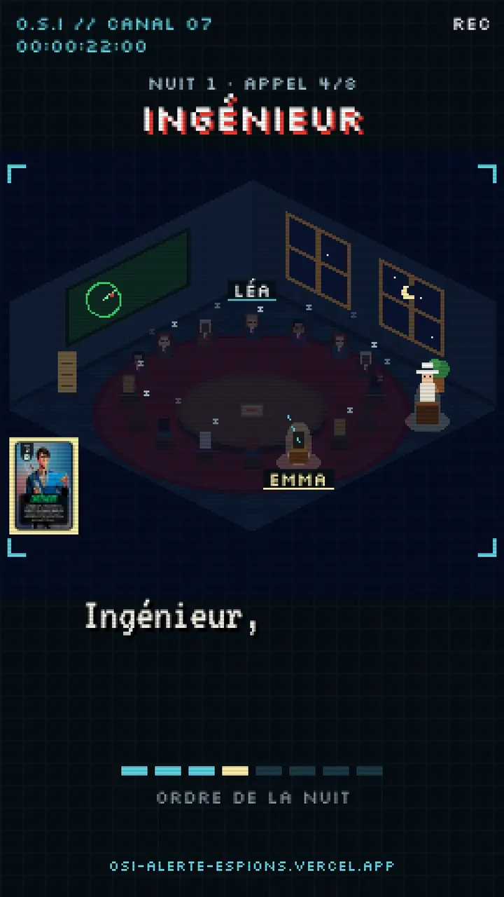
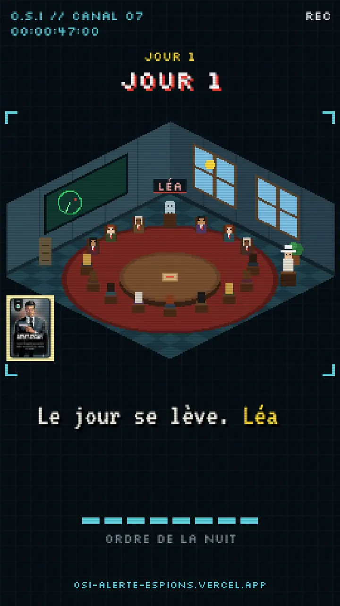
On colle un lien TikTok ou Instagram et la vidéo se range toute seule dans le bon casier (recettes, sport, voyage, business…) d'après sa légende et ses hashtags. On corrige d'un tap, l'app apprend, et le bouton « Une vidéo au hasard » ressort enfin ce qu'on avait mis de côté.
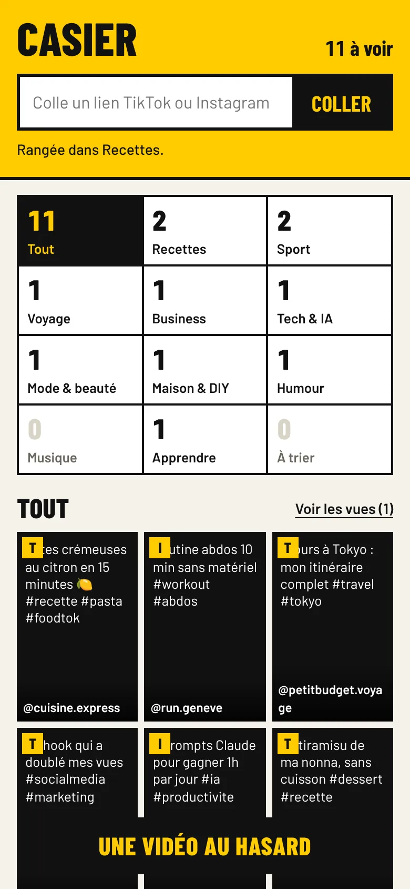
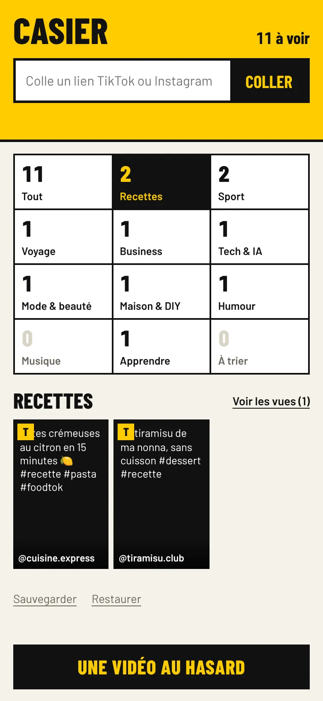
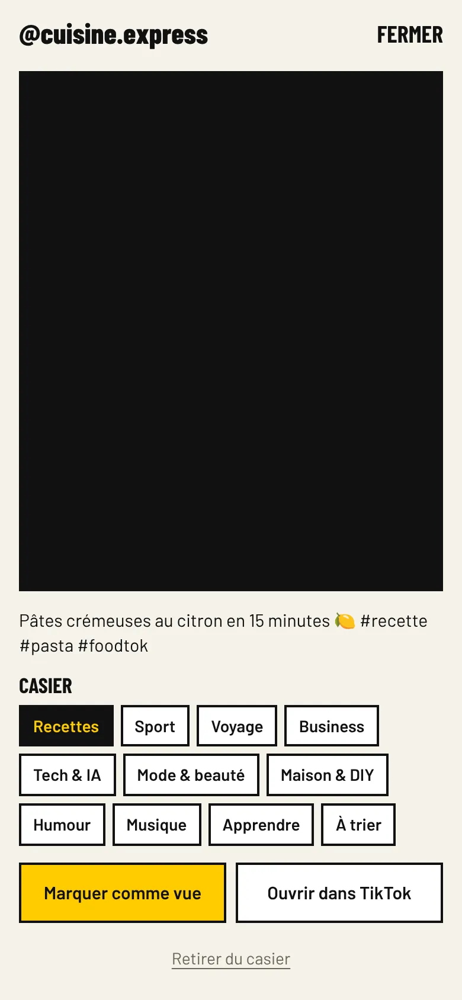
Captures réalisées avec des vidéos d'exemple.
Une page bilingue FR/EN envoyée aux marques. Elle présente l'univers de Helin, les chiffres du dernier mois sur Instagram et TikTok, son audience et un portfolio de reels. Le tout se met à jour depuis un seul fichier de configuration.
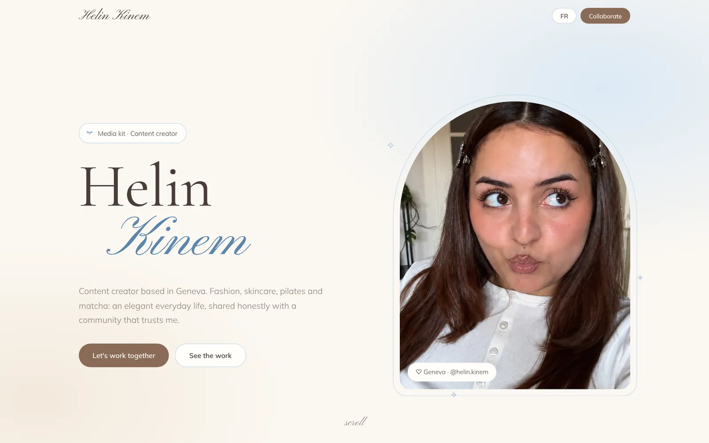
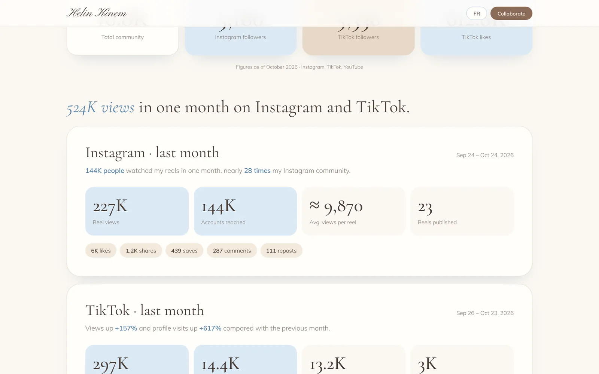
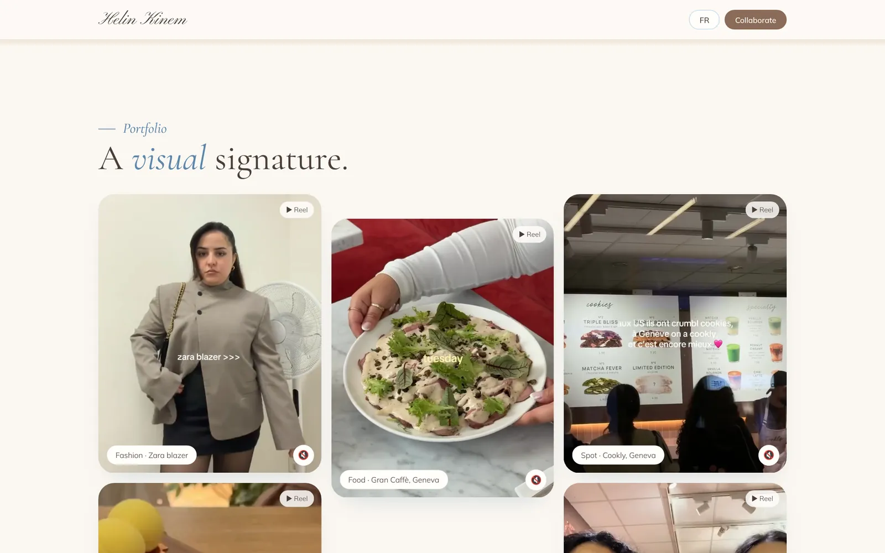
Un template Notion pour gérer ses réseaux de A à Z, mon premier produit numérique.
Un style de montage complet pour les reels de Helin : sous-titres façon magazine, titres manuscrits, collage photos.